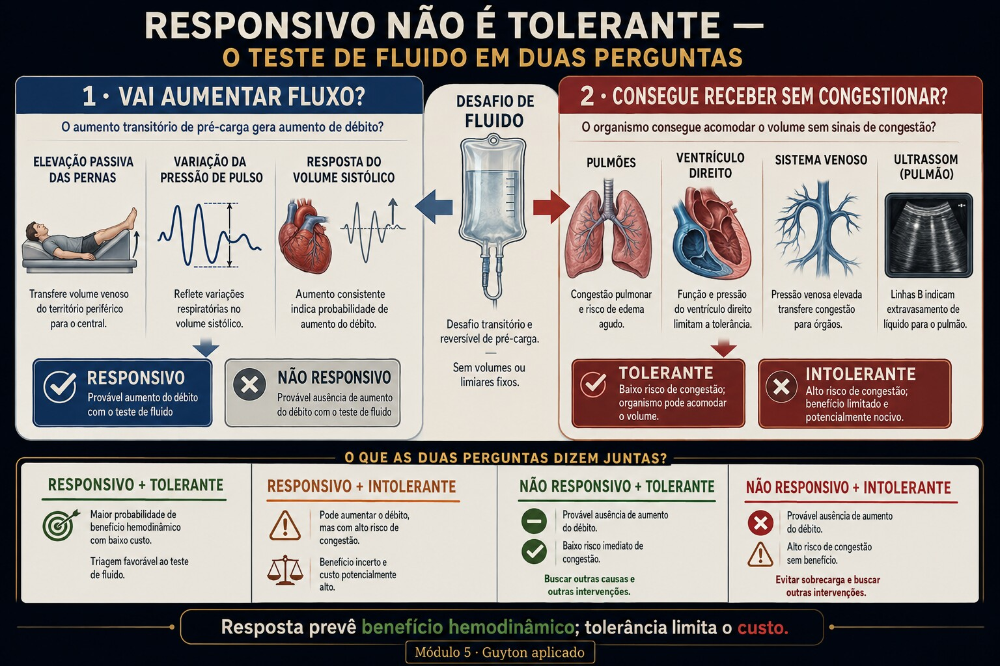

Perfunde · Módulo 5 · Pré-carga II · Guyton aplicado
Responder a volume não é tolerar volume
Dois eixos diferentes. Um pergunta se o bolus sobe o débito (a Starling ascendente). O outro, se o pulmão e o VD aguentam o volume. O paciente que responde e afoga vive no cruzamento.

Fig. 5 · Responsividade não é tolerância. Prever aumento de débito não responde se o organismo acomodará volume sem congestionar.
Responde ao volume — e afoga
Cinco atos. A variável escondida é que "vai responder" e "vai tolerar" são duas perguntas. (Caso didático; nenhuma conduta é prescrita.)
Ato 1 · a porta
Paciente hipotenso, PPV elevada, IVC colabável. "Fluido-responsivo — o volume vai subir o débito."
PPV 18%IVC colabávelpulmão infiltrado (SDRA)
Ato 2 · a leitura ingênua
"Responsivo = dar volume." Dá-se o bolus. O débito sobe… e a saturação cai.
Ato 3 · a fenda
A responsividade estava certa: o coração estava no ramo ascendente. Mas a pergunta que faltou foi: o pulmão aguenta?
Ato 4 · decompor
Responsividade = posição na Starling (o bolus sobe a interseção). Tolerância = o pulmão/VD aceitam a pressão de enchimento que sobe. Com membrana alveolar permeável (SDRA), mesmo um aumento modesto de pressão inunda. Os dois eixos são independentes.
Ato 5 · a ferramenta
O Instrumento mostra o salto da interseção (responde?) e o eixo de tolerância (afoga?) lado a lado.
▸ Revelar a variável escondida
A variável é a tolerância pulmonar, um eixo separado da responsividade. Fluido-responsivo (PPV alta, IVC colabável) prediz que o débito sobe — não que o pulmão aguenta. Responder ≠ tolerar; o quadrante "responde-mas-afoga" é a armadilha.
Trilha socrática
Dois eixos, duas perguntas.
O que "fluido-responsivo" prediz?
Que o débito vai subir com volume — porque o coração está no ramo ascendente da Starling. É a primeira pergunta.
Como vejo isso à beira do leito?
PPV/VVS alta (o débito oscila muito com a ventilação), IVC colabável, e o teste reversível: elevação de pernas = auto-bolus que sobe o DC e depois volta.
Responsivo, então dou volume?
Falta a segunda pergunta: o pulmão e o VD toleram? Responsividade prediz benefício; tolerância pergunta o custo.
O que faz não tolerar?
Pulmão com baixa complacência/permeável (SDRA): a pressão de enchimento que sobe extravasa para o alvéolo mesmo em valores modestos. E pré-carga já alta = congestão a montante.
Os dois eixos andam juntos?
Não — são independentes. Pode-se ser responsivo e intolerante (a armadilha), ou no platô e tolerante (não rende, mas não afoga).
Então PPV alta autoriza o bolus?
Autoriza esperar resposta, não garante segurança. A decisão integra os dois eixos — e isso é mecanismo, não protocolo.
Instrumento · o salto do bolus e os dois eixos
A linha pontilhada é a interseção após um bolus (Pmsf +3): o salto vertical é a responsividade. Abaixo, o traçado arterial mostra a PPV. O eixo de tolerância vem da complacência pulmonar.
Complacência baixa = pulmão rígido/permeável (SDRA): muda só o eixo de tolerância, não o de responsividade.
Lab · os quatro quadrantes
Cenários ou as alavancas. O veredito de dois eixos vira; os banners explicam por quê.
RVcardíacaapós bolusoperação
Responsividade × Tolerância
—
Responsivo. No ramo ascendente: o bolus sobe o débito (PPV/IVC altos, pernas elevam o DC). Há reserva de pré-carga.
No platô. O bolus quase não sobe o débito — a interseção desliza no topo da Starling. Volume aqui é custo sem ganho.
Não tolera (pulmão). Complacência baixa/permeável: a pressão de enchimento extravasa para o alvéolo mesmo modesta. Responder não autoriza inundar.
Congestão a montante. Pré-carga já alta: o bolus empurra a pressão de enchimento para território congestivo (pulmão e VD).
Avaliação · tutor gráfico
Cada questão desenha o Guyton com o salto do bolus, computado ao vivo. Leia responsividade e tolerância — feedback persistente.
0 / 0 respondidas
Honestidade do modelo
Material educacional · não é suporte à decisão. Ensina-se por que responder ≠ tolerar — nunca dose, alvo, gatilho de bolus ou conduta para um paciente específico.
→ A responsividade é derivada do mesmo Guyton idealizado do módulo 4 (linear-por-trechos, monocompartimental). → PPV/VVS e colapsabilidade de IVC são aqui proxies do mesmo eixo de Starling — na vida real dependem de ritmo regular, ventilação controlada com volume corrente adequado, ausência de cor pulmonale, tórax fechado; fora disso perdem validade. → A tolerância é resumida por uma complacência pulmonar normalizada + pré-carga pós-bolus; a realidade inclui glicocálice, permeabilidade, função do VD e zonas de West. → A elevação de pernas é tratada como bolus reversível idealizado. Os deslocamentos são qualitativamente fiéis; os números, exatos dentro do modelo.